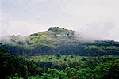
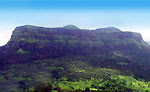
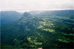
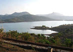
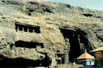
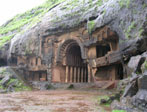
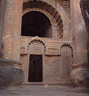
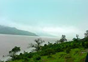
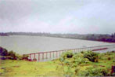

Steeped in history, soak in nature’s bounty.
The history of Lonavala goes back a few thousand years when Buddhist monks built monasteries in the caves nearby. Lonavala gained popularity as a getaway and a hill station during the British Raj. This historic city of Lonavala was first discovered by then Governor of Bombay, Sir Elphinstone in 1811. At the time it was a thick forest and was sparsely populated.
The origin of the word Lonavala can perhaps be traced back to the the thick forest which became known as "Lonali". However there is no historic evidence to support this. "Layan" in Sanskrit means a place to rest. This word when translated in "Prakrit" becomes "Len" meaning a resting-place carved out of stone. "Avali" means "series" in Prakrit hence the place around which there are a series of such Len is called "Lonavali". Lonali of the past is today known as "Lonavala".
In ancient times the Yadavas ruled today's Lonavala. Later, the Mughals realized it’s strategic location and ruled over for a long time. During Maratha and Peshwa rule the forts around this area and the Maratha warriors "Mavlas" played an important role.
Over the years Lonavala has played host to millions of solace seekers from Mumbai and Pune. Whether it’s for a short weekend getaway or a longer recuperative stay, Lonavala has a pleasant climate throughout the year for holidaying in pleasure.
Here are some of the interesting spots and points within easy reach from Upper Deck…
Rajmachi Fort :
Rajmachi Fort is about 10km from Lonavala and can be approached only on foot. It is surrounded by deep valleys on three sides and a thick forest on one side. It is reached through Tungarli village and Dam or from Thakurwadi station by crossing a place called Palas Dari.
Visapur Fort :
This fort is located to the east of Lohagad fort and it has a huge plateau surrounding it and is famous for its protective walls with intricate designs. These walls and designs have remained in good shape even after facing centuries of torrential rains.
Lohagad Fort :
This fort is also approximately 10 km from Lonavala and belongs to Shivaji's period. There is a huge cave outside the fort. This cave would be used for storing grains during the rainy season. There is a tomb here as well as a Shivlinga. Next to that there is a tank of water with sweet taste. On the fort there is one more place where water would be stored for use. The peculiar design on the walls of the fort is known as Vindhukata (fangs of a scorpion). It is said that Shivaji Maharaj had kept the treasures he looted from Surat in this fort for some period of time.
Tunga Fort :
A rock piercing the horizon can be seen to the south of Lohagad, this is Tunga Fort. Pavana Dam surrounds it. This fort can be approached by motorboat from Pavana Dam. It is a stiff fort to climb as it has narrow and slippery paths for climbing. There is a temple of Mahadeo on the fort. During Shivaji's period, this fort was use for keeping a watch on the other forts.
Karla Caves :
These are the ancient Buddhist caves and date back to 160BC. The exquisite carvings found in these caves leave one spellbound. At the entrance, there is a small temple of Ekvira Devi as well as lion pillars and huge elephant forms are carved which represent different forms of Gautama Buddha. The entrance gate is in the shape of a "Peepal" leaf through which one enters the huge Chaitya griha or hall. This large hall is full of stone pillars, which are carved with elephant and human forms. The roof is high and semicircular. The pillars are surprisingly very smooth. There are many resting rooms around here. These rooms carved in the rocks are calm and ideal for meditation. Water is available for drinking from the tanks around.
Bhaja Caves :
On the way to Pune from Lonavala the first station is Malavali. South of this station at a distance of about 25 minutes by foot is small town called Bhaje. On one side there is Lohagad fort on other side Visapur fort and approximately in the center are Bhaja Caves. They are similar to Karla Caves but are on a much smaller scale. These caves are also in Chaitya style. The specialty of these caves is that the rays of the setting sun visit these caves. On the southern side, there is a place where one can see carved figures of Gods and Goddesses.
Bedsa Caves :
These caves are located on Mumbai Pune road near Kamshet, between Kadde and Bedsa. These caves are as big as Karla Caves but as they are located on a side off the main road there is not much tourist traffic here. Huge Lion pillars and a large Chaitya hall with resting rooms is a specialty of these caves. There are smooth pillars in the shape of lion or human form. The sunrays fall straight on the place of prayer here. This caves at Karla Bhaja and Bedsa which are called "Leny" in Marathi perhaps gives the place the name "Lonali" which subsequently changed to Lonavala.
Tungarli Lake :
This lake is at north of S.T. Stand near Tungarli village. It supplies water to Lonavala City. The hill gives a beautiful view of Rajmachi, Lohagad, Visapur forts and Lonavala City.
Lonavala Lake :
This lake is owned by central railway and it is on the way to INS Shivaji. It was constructed in 1876. It is a very beautiful spot. River Indrayani is supposed to have originated here
Duke's Nose :
This place is named after Duke Wellington whose pointed nose this cliff resembles. It also looks like a hood of a snake, which is why it is also called as "Nagfani" (Hood of Snake). This point can be approach from INS Shivaji and Kurwande Village.